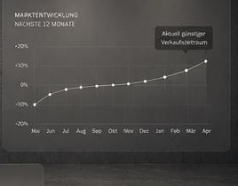

Verkaufszeitpunkt prüfen
Wann lohnt sich der Verkauf
Ihres Fuhrparks?
Nutzen Sie unsere Marktanalyse, um den optimalen Zeitpunkt für den Verkauf Ihrer Fahrzeuge zu ermitteln und den bestmöglichen Preis zu erzielen.
Analyse starten →Ihre Vorteile
✓ Aktuelle Marktpreise auf einen Blick
✓ Prognosen für die nächsten 6 bis 12 Monate
✓ Individuelle Empfehlung für Ihren Fuhrpark
✓ Kostenlos und unverbindlich
Marktentwicklung nächste 12 Monate

◔
Wissen schafft Vorteile.
Unsere Datenbasis aus tausenden Transaktionen zeigt Ihnen, wann sich der Verkauf am meisten auszahlt.